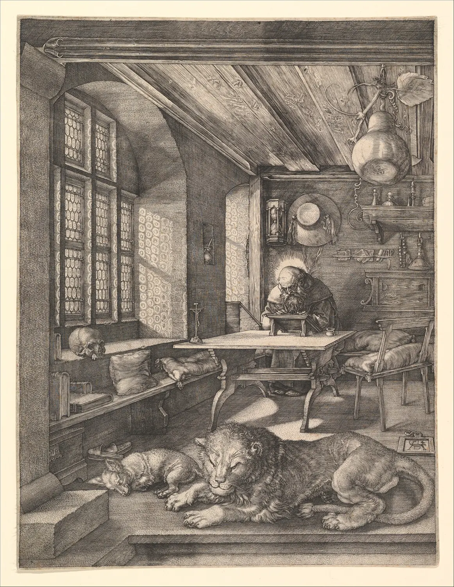

해상도와 압축
휴대폰 화면에서 선명하던 사진을 크게 인쇄했더니 가장자리가 계단처럼 깨졌다. 반대로 카메라에서 바로 꺼낸 사진을 웹사이트에 올렸더니 한 장이 10 MB가 넘어 페이지가 한참 뒤에야 열렸다. 사진 파일에는 두 가지 숫자가 붙어 다닌다. 화소가 몇 개인가, 그리고 그 화소들을 몇 바이트로 적었는가. 이 장은 첫째 숫자가 인쇄 크기와 어떻게 만나는지, 둘째 숫자를 줄이는 JPEG·PNG·WebP가 무엇을 버리고 무엇을 지키는지 직접 들여다본다. 끝에는 용도마다 내보낼 파일을 정한다.
- 화소 수, ppi, 인쇄 크기의 관계를 계산하고 dpi와 ppi를 구별한다.
- 300 ppi 관례가 사람 눈의 해상력과 보는 거리에서 나온 어림값임을 알고, 거리에 따라 필요한 ppi를 계산한다.
- 사진을 줄이거나 키울 때 생기는 앨리어싱·무아레와 흐림을 보고, 리샘플링 방식의 차이를 설명한다.
- JPEG가 8×8 블록, DCT, 양자화로 용량을 줄이는 원리와 블록·번짐 같은 흔적이 생기는 이유를 안다.
- PNG·JPEG·WebP를 내용에 맞게 고르고, 용도별 해상도·형식·품질 값을 정한다.
화소 수와 인쇄 크기
디지털 사진은 작은 색 칸의 격자다. 칸 하나가 화소(Pixel)이고(8장), 가로·세로 화소 수를 그 사진의 해상도(Resolution)라고 흔히 부른다. 6000×4000 화소 사진, 1600×1122 화소 사진처럼 쓴다. 이 숫자에는 길이 단위가 없다. 6000화소짜리 사진은 손톱만 하게도, 벽만 하게도 인쇄할 수 있다. 크기를 정하는 순간 비로소 "1인치에 화소가 몇 개 들어가는가"가 정해진다. 이것이 ppi(Pixels per inch)다.
비슷한 말인 dpi(Dots per inch)는 원래 프린터가 1인치에 찍는 잉크 점의 수다. 잉크젯이나 인쇄기는 화소 하나의 색을 여러 개의 작은 점(망점)으로 섞어 표현하므로, 프린터의 dpi는 사진의 ppi보다 훨씬 크다(1200 dpi, 2400 dpi 등). 일상에서는 둘을 섞어 쓰는 일이 많고 인쇄소도 "300 dpi로 주세요"라고 말하곤 하는데, 그때 뜻하는 것은 대개 사진 파일의 300 ppi다.
아래 시뮬레이터는 도록 한 쪽(A5, 148×210 mm에 사방 3 mm 재단 여유)이다. 사진 틀의 오른쪽 아래 손잡이를 끌어 인쇄 크기를 바꾸고, 슬라이더로 사진의 가로 화소 수를 바꾼다. 오른쪽 돋보기는 인쇄물 위 10 mm 정사각형 안에 화소가 실제로 몇 개 들어가는지 크게 보여 준다.
화소 수와 인쇄 크기, 그리고 ppi
왜 300 ppi인가
인쇄용 사진은 300 ppi로 준비하라는 관례가 있다. 이 숫자는 어디서 왔을까. 출발점은 사람 눈의 해상력이다. 시력표에서 "정상 시력(1.0)"은 대략 1분각(1/60도) 크기의 틈을 알아보는 능력으로 정의된다. 책을 보는 거리를 30 cm로 두면 1분각은 종이 위에서 약 0.087 mm이고, 1인치에 그런 칸이 약 290개 들어간다. 300 ppi는 이 계산을 반올림한 어림값이다.
실무에서는 300 ppi를 목표로 하되, 사진이 조금 모자라면 240~250 ppi까지는 대부분의 인쇄물에서 차이를 알아보기 어렵다고 보는 경우가 많다. 반대로 300을 훨씬 넘게 준비해도 인쇄물은 더 좋아지지 않는다. 인쇄기의 망점과 종이의 번짐이 그보다 먼저 한계를 정하기 때문이다. 인쇄소마다 권하는 값이 있으니 최종 기준은 그 인쇄소의 안내를 따른다.
리샘플링: 줄이기와 키우기
원하는 화소 수가 사진과 다르면 화소를 새로 계산해야 한다. 이것이 리샘플링(Resampling)이다. 줄일 때는 여러 화소를 하나로 합치고, 키울 때는 화소 사이를 메울 값을 지어낸다. 어떤 규칙으로 합치고 지어내느냐에 따라 결과가 크게 다르다. 가장 단순한 최근접 이웃(Nearest neighbor)은 새 화소 자리에서 가장 가까운 원래 화소 하나를 그대로 가져온다. 쌍선형(Bilinear)은 가까운 네 화소를 거리에 따라 섞고, 바이큐빅(Bicubic)은 열여섯 화소를 부드러운 3차 곡선의 무게로 섞는다.
줄이기에서 생기는 문제는 앨리어싱(Aliasing)이다. 원래 사진에 촘촘한 줄무늬가 있는데 새 격자가 그보다 성기면, 격자가 줄무늬를 띄엄띄엄 집어 원래 없던 굵은 물결무늬가 나타난다. 이 가짜 무늬를 무아레(Moiré)라고 한다. 아래 동판화는 가는 평행선이 가득해서 이 문제를 시험하기에 알맞다.

리샘플링: 무아레와 흐림
교훈은 둘이다. 줄일 때는 반드시 "필터를 넓히는" 방식, 곧 줄이는 만큼 넓은 범위를 평균하는 방식을 쓴다. 대부분의 사진 프로그램은 내보내기에서 이렇게 하지만, 브라우저나 간단한 도구의 빠른 축소는 그렇지 않을 때가 있다. 그리고 키우기는 정보를 만들지 못한다. 요즘에는 학습된 모형으로 그럴듯한 세부를 "그려 넣는" 확대 도구도 있지만, 그 세부는 원래 장면에서 온 것이 아니라 모형이 추측한 것이다. 작품 사진이나 기록 사진에서는 그렇게 생긴 세부를 실물의 기록으로 쓰면 안 된다. 필요한 화소는 찍을 때 확보한다.
창가의책_web_1600.webp, 창가의책_print_A5full.tif) 어느 것이 원본에서 바로 나온 것인지 헷갈리지 않는다.
JPEG는 무엇을 버리는가
1600×1122 사진 한 장을 그대로 적으면 화소마다 빨강·초록·파랑 1바이트씩, 약 5.4 MB다. 같은 사진을 JPEG로 저장하면 수백 KB, 열 분의 일 아래로 준다. JPEG는 사진을 손톱만큼도 흐리게 하지 않고 줄이는 것이 아니라, 사람 눈이 잘 알아채지 못하는 정보를 골라 버린다. 이렇게 원본으로 완전히 되돌릴 수 없는 압축을 손실 압축(Lossy compression)이라고 한다. JPEG 표준(ITU-T T.81, 1992)이 정한 단계는 다음과 같다.
핵심은 ③과 ④다. DCT(Discrete cosine transform, 이산 코사인 변환)는 8×8 화소 블록을, 완전히 평평한 무늬 하나(평균 밝기)와 가로·세로로 점점 촘촘해지는 물결무늬 63개를 얼마씩 섞으면 되는지로 바꿔 적는다. 64개 화소가 64개 "섞는 양"(계수)으로 바뀔 뿐, 이 단계에서는 아무것도 버리지 않는다. 그런데 사진의 블록은 대개 부드러워서 평평한 무늬와 성긴 무늬 몇 개에 거의 모든 양이 몰리고, 촘촘한 무늬의 양은 작다. ④ 양자화(Quantization)는 각 계수를 정해진 수로 나누고 반올림한다. 촘촘한 무늬일수록 큰 수로 나누므로 작은 계수들이 대부분 0이 된다. 0이 많을수록 ⑤에서 짧게 적힌다. 아래에서 블록 하나를 직접 들여다본다.
8×8 블록 하나: DCT와 양자화
블록마다 따로 계산한다는 사실이 JPEG의 대표적인 흔적을 만든다. 품질을 많이 낮추면 블록 하나가 평균 밝기 하나로만 남아 8×8 타일이 드러나고(블록 현상), 이웃 블록끼리 서로 사정을 모르니 경계에서 밝기가 툭 끊긴다. 날카로운 경계 둘레에는 링잉이, 색차를 절반으로 줄인 탓에 빨간 글자 둘레에는 색이 번진 테두리가 생긴다. 이 흔적들은 부드러운 사진에서는 잘 숨고, 글자·선화·평평한 색면에서는 쉽게 드러난다.
품질 값과 다시 저장하기
사진 프로그램의 "JPEG 품질" 손잡이는 양자화 표에 곱하는 배율을 고르는 손잡이다. 품질 100은 표의 모든 값을 1로 만들어 반올림 오차만 남기고, 품질을 내릴수록 나눗셈이 커진다. 숫자 자체에는 표준이 없어서, 같은 "품질 80"도 프로그램마다 표와 배율이 다르다. 그러니 품질 값은 프로그램 안에서 비교하는 눈금으로만 쓰고, 다른 프로그램의 값과 맞대어 보지 않는다.
아래 시뮬레이터는 이 브라우저에 들어 있는 실제 JPEG 인코더로 그림을 저장했다가 다시 읽는다. 오른쪽(좁은 화면에서는 아래) 돋보기는 사진의 한 부분을 네 배로 키워, 왼쪽 절반은 원본, 오른쪽 절반은 저장 결과를 보여 준다. 돋보기 네모는 큰 그림 위에서 끌어 옮긴다.
JPEG 품질과 다시 저장할 때의 손실
PSNR(Peak signal-to-noise ratio)은 원본과 결과의 차이를 데시벨로 적은 숫자로, 클수록 원본에 가깝다. 사진에서 대략 40 dB를 넘으면 나란히 놓고 봐도 차이를 찾기 어렵고 30 dB 아래면 흔적이 보이기 시작한다고들 하지만, PSNR은 눈이 보는 방식을 단순화한 숫자라서 같은 PSNR도 그림에 따라 눈에 띄는 정도가 다르다. 숫자는 방향을 알려 주고, 판단은 100% 크기로 확대해 눈으로 한다.
PNG, JPEG, WebP: 내용에 맞는 형식
형식은 "좋은 것"과 "나쁜 것"이 아니라 "맞는 내용"이 다르다. PNG(Portable Network Graphics)는 무손실 압축(Lossless compression)이다. 화소 하나 틀리지 않게 되돌릴 수 있고, 같은 색이 이어지거나 반복되는 곳을 짧게 적는 방식이라 평평한 색면·글자·선화에 강하다. 대신 붓 자국과 종이 결처럼 화소마다 값이 조금씩 다른 사진에서는 거의 줄지 않는다. JPEG는 그 반대다. 사진의 부드러운 변화는 잘 줄이지만 날카로운 글자 둘레에 얼룩을 남긴다. WebP는 구글이 2010년에 발표한 형식으로 손실과 무손실 모드를 모두 갖고 투명도도 지원하며, 지금의 주요 브라우저는 모두 읽는다.
내용과 형식: 사진, 안내판, 선화
| 형식 | 압축 | 잘 맞는 내용 | 피할 때 |
|---|---|---|---|
| JPEG | 손실 | 사진, 수채화·유화 같은 부드러운 그림. 어디서나 열린다 | 글자·로고·선화, 다시 고칠 중간 파일 |
| PNG | 무손실 | 글자가 든 그래픽, 화면 캡처, 투명 배경, 선화 | 큰 사진(용량이 몇 배) |
| WebP | 손실·무손실 | 웹에 올리는 사진과 그래픽. 같은 화질에서 대개 JPEG보다 작다 | 인쇄소 제출, 오래된 프로그램과 주고받기 |
| TIFF | 무손실(또는 무압축) | 보관용 원본, 16비트 편집 결과, 인쇄소 제출 | 웹(브라우저가 보여 주지 않는다) |
용도별 내보내기 작업대
지금까지의 숫자를 "어디에 쓸 파일인가"라는 물음으로 모은다. 인쇄용은 지면 크기와 ppi가 화소 수를 정하고, 형식은 손실이 없는 쪽을 고른다. 웹용은 화면에서 보일 크기가 화소 수를 정하고, 형식과 품질은 용량과 화질의 거래로 정한다. 아래 작업대는 수채화 한 점(호머의 「나소의 담」을 서윤의 그림 대신 쓴다)의 1600화소 파일로 이 거래를 직접 해 본다. 그래프는 고른 크기와 형식에서 품질에 따라 파일 크기가 어떻게 변하는지 이 브라우저의 인코더로 그때그때 잰 것이다.
용도별 내보내기 작업대
작업대에서 보듯 웹용 파일의 크기를 가장 크게 바꾸는 손잡이는 화소 수이고, 그다음이 형식, 마지막이 품질이다. 품질 70~85 근처는 용량과 화질의 거래가 가장 유리한 구간이다. 90을 넘기면 용량은 빠르게 늘지만 눈에 보이는 차이는 거의 없고, 60 아래로 내리면 용량은 조금 줄지만 흔적이 보이기 시작한다. 인쇄용은 이 거래를 하지 않는다. 인쇄소에 보내는 파일은 무손실로, 지면 크기에서 300 ppi가 되게 만든다. 이 단계들은 13장 실험실에서 보정·크롭과 함께 한 번 더 모인다.
서윤의 겨울 촬영 노트
하나의 원본, 두 갈래의 파일
보정을 마친 RAW 파일이 서른 장 남짓 쌓이자, 서윤은 도록 인쇄소와 서점 웹사이트에 보낼 파일을 정해야 했다. 처음에는 "그냥 제일 큰 JPEG 하나로 다 쓰면 되지 않나" 생각했다. 인쇄소 담당자는 "A5 도록이면 300 dpi로 주세요"라고만 했고, 서점 주인은 "웹사이트가 느리면 손님이 안 봐요"라고 했다.
서윤은 먼저 인쇄용 숫자를 계산했다. A5(148×210 mm)에 사방 3 mm 재단 여유를 더하면 154×216 mm이고, 300 ppi로 채우려면 1819×2551화소가 필요하다. 쪽 안쪽에 여백을 두고 작품을 놓는 작품면(최대 118×180 mm)은 1394×2126화소다. 미러리스 원본은 이보다 훨씬 크니 화소는 모자라지 않았다. 문제는 형식이었다. 인쇄소가 말한 "300 dpi"는 사진 파일의 300 ppi를 뜻했고, 파일은 손실 없는 TIFF로 받는다고 했다. 한도경은 "원본은 건드리지 말고, 보낼 때마다 거기서 새로 뽑아"라며 필름 시절 원판과 인화의 관계에 빗댔다.
웹용은 작업대에서 직접 재 보았다. 호머의 수채화를 대신 놓고 가로 1600화소로 줄이면 비압축 5.4 MB, PNG 약 3.3 MB, JPEG 품질 85 약 365 KB, WebP 품질 80 약 220 KB였다(크롬 인코더 기준). 100% 크기로 확대해 실물 사진과 번갈아 봐도 WebP 80과 JPEG 85에서 붓 자국의 차이를 찾지 못했다. SNS는 올릴 때 한 번 더 압축하므로 그만큼 여유를 두어 JPEG 품질 90(약 460 KB)으로 정했다. 행사 안내처럼 글자가 든 그래픽은 JPEG로 저장했을 때 글자 둘레가 지저분해지는 것을 보고 PNG로 남기기로 했다.
| 용도 | 크기 | 형식·품질 | 메모 |
|---|---|---|---|
| 보관 원본 | 카메라 원본 그대로 | RAW + 16비트 TIFF | 손대지 않는다 |
| 도록 전면 | 1819×2551 | 8비트 TIFF(LZW 무손실) | 154×216 mm, 300 ppi |
| 도록 작품면 | 최대 1394×2126 | 8비트 TIFF(LZW 무손실) | 지면 크기 × 300 ppi, 최소 240 ppi |
| 웹사이트 | 가로 1600 | WebP 품질 80 (대체 JPEG 85) | sRGB, 장당 400 KB 이하 |
| SNS | 가로 1600 | JPEG 품질 90 | 위치 정보 삭제 |
| 글자가 든 안내 그래픽 | 가로 1600 | PNG | 사진과 섞지 않는다 |
핵심 정리
- 화소 수에는 길이 단위가 없다. 인쇄 크기를 정해야 ppi(화소 수 × 25.4 ÷ mm)가 정해진다. 화면은 파일의 ppi 메모 값을 읽지 않는다.
- 300 ppi는 30 cm 거리에서 1분각을 구별하는 시력을 기준으로 한 어림값이다. 멀리서 보는 인쇄물은 훨씬 낮아도 되고, 300을 크게 넘겨도 인쇄물은 좋아지지 않는다.
- 줄일 때 필터를 넓히지 않으면 촘촘한 무늬가 앨리어싱과 무아레를 만든다. 키우기는 사라진 정보를 되살리지 못하고 계단이나 흐림만 남긴다.
- JPEG는 색차를 줄이고, 8×8 블록을 DCT로 무늬 성분으로 바꾼 뒤, 촘촘한 성분을 크게 나눠 버린다. 블록 현상, 링잉, 색 번짐은 이 과정의 흔적이다.
- 품질 값은 양자화 배율의 눈금이고 프로그램·형식마다 다르다. 같은 설정으로 다시 저장하면 손실이 금방 멈추지만, 자르거나 옮긴 뒤 다시 저장하면 계속 쌓인다.
- 사진은 JPEG나 WebP, 글자·선화·평면 그래픽은 PNG, 보관과 인쇄는 무손실 TIFF가 맞다. 웹용은 화소 수 → 형식 → 품질 순으로 용량을 정한다.
확인 퀴즈
1. 가로 1600화소 사진을 A5 도록의 재단 여유까지 꽉 차게(가로 154 mm) 인쇄하려 한다. 이때의 ppi와 판단으로 가장 알맞은 것은?
2. 가는 평행선이 많은 동판화 사진을 최근접 이웃 방식으로 3분의 1 크기로 줄였더니 원래 없던 굵은 물결무늬가 나타났다. 이 현상과 대책으로 맞는 것은?
3. JPEG의 품질을 낮추면 파일이 작아지는 가장 직접적인 이유는?
4. 서점의 행사 안내 이미지(흰 바탕에 빨간 큰 글자와 작은 검은 글자)를 웹에 올리려 한다. 가장 알맞은 선택은?